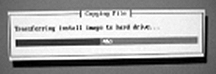

Illustration 2: Starting Install Process

| NOTE: | As the install begins, it queries all physical drives in the system and builds/partitions all available devices. If the disk is not what the system expected, a warning indicating a bad disk may display. Software will fix during the install. Click [Ignore] to proceed with the install. |
After about 90 seconds, a progress message displays, indicating that the install image is being transferred. (Shown below.)
Illustration 1: Transferring Install Image to Hard Drive

Two minutes later, an additional message displays indicating that the install process has begun. (Shown below.)
Illustration 2: Starting Install Process